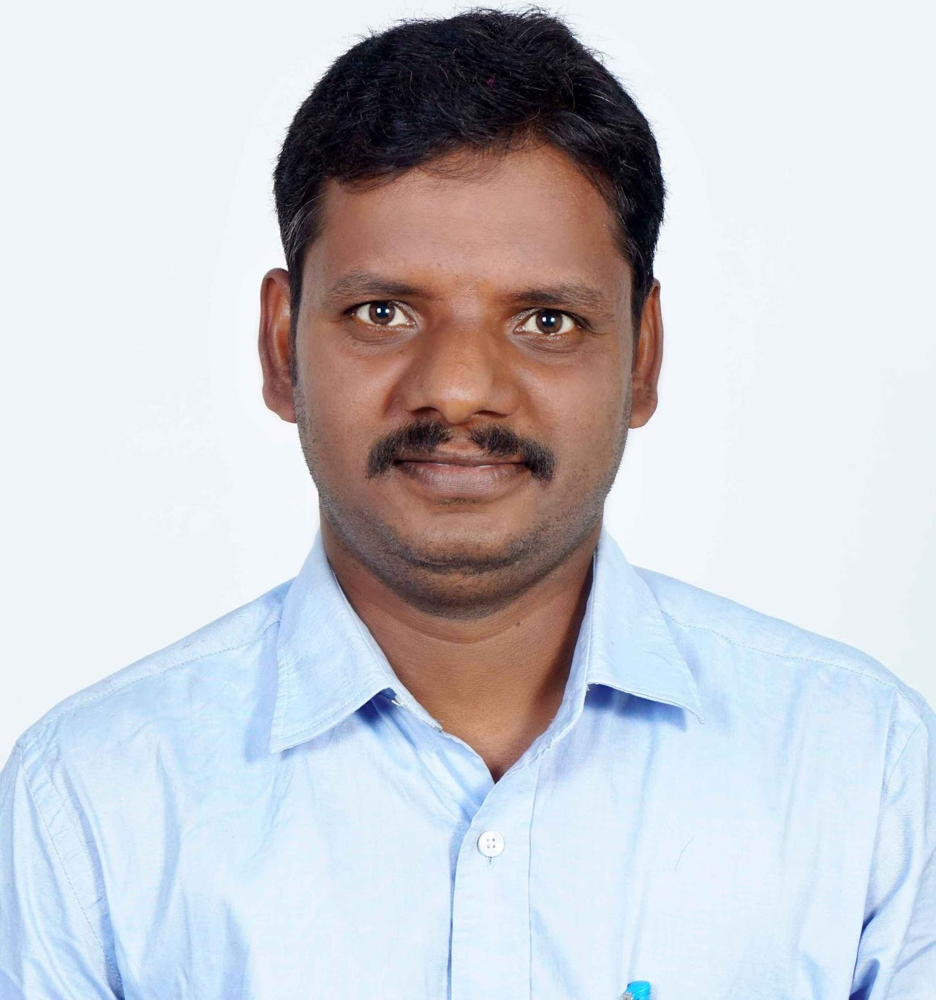
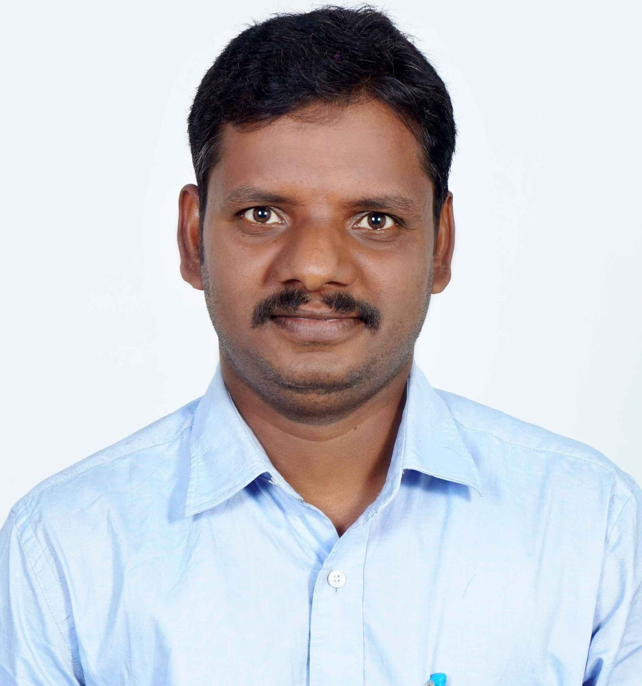

Technical Expertise
- Multimodal Scanning probe Microscope (A.F.M)
- Ultra High Sensitive MOKE Magnetometer (NanoMOKE)
- Zeta 3D-Profilometer
Professional Summary
Dedicated and skilled Senior Technical Superintendent with over 14 years of progressive experience in managing and maintaining advanced research and teaching laboratories. Expertise spans microscopy, spectroscopy, and magneto-optical equipment, with hands-on experience in laboratory coordination, training, experimental setups, and maintenance operations. Known for technical precision, proactive problem-solving, and collaborative support for faculty and student research initiatives. Adept at balancing technical responsibilities with administrative tasks including procurement, record management, and AMC coordination.
Educational Qualifications
| Degree | University / Institution | Year | Marks / Grade |
|---|---|---|---|
| M.Sc. (Physics) | Sri Venkateswara University, Tirupati, A.P. | 2013 | 82% |
| P.G.D.C.A. | Tech Edge Solutions, Palamaner, A.P. | 2008 | A Grade |
| B.Sc. (Physics) | Sri Venkateswara University, Tirupati, A.P. | 2008 | 84% |
| H.S.E. | Board of Intermediate Education, A.P. | 2005 | 86% |
| S.S.C. | Board of Secondary Education, A.P. | 2003 | 88% |
Professional Experience (Condensed)
Indian Institute of Technology Hyderabad (IITH)
(An autonomous institution under the Department of Education, Government of India)
| Senior Technical Superintendent | Apr 2024 – Present |
| Technical Superintendent | Nov 2020 – Apr 2024 |
| Junior Laboratory Assistant | Aug 2015 – Nov 2020 |
| Senior Project Technician | May 2015 – Aug 2015 |
| Project Technician | May 2013 – May 2015 |
| Senior Project Assistant | Apr 2011 – Jul 2011 |
| Project Assistant | Jul 2008 – Mar 2011 |
Technical Expertise
- Operation and maintenance of Microscopy, Spectroscopy, and Magneto-Optical instruments.
- Major equipment handled: Atomic Force Microscope (Park Systems); Nano MOKE (DMO); Zeta 3D Optical Profilometer.
- Hands-on experience with undergraduate and postgraduate physics laboratory experiments.
- Simulation work related to Ion Beam Optics and Optical Systems.
- Skilled in technical documentation, inventory management, and laboratory coordination.
Computer Skills
- Operating Systems: Windows, Linux
- Programming / Simulation: MATLAB, Python (basic), Origin, COMSOL (basic)
- Office & Documentation: MS Office Suite, Google Workspace, LaTeX
- Data Analysis & Visualization: Excel (advanced), OriginPro, ImageJ
- Database & Inventory: ERP systems, Lab data record management
- General: File versioning, report formatting, document automation, online collaboration tools
Key Strengths
- Strong technical and analytical problem-solving ability.
- Proven capacity to manage multiple lab facilities efficiently.
- Effective communicator and team collaborator.
- Committed to maintaining high laboratory standards and supporting institutional research excellence.